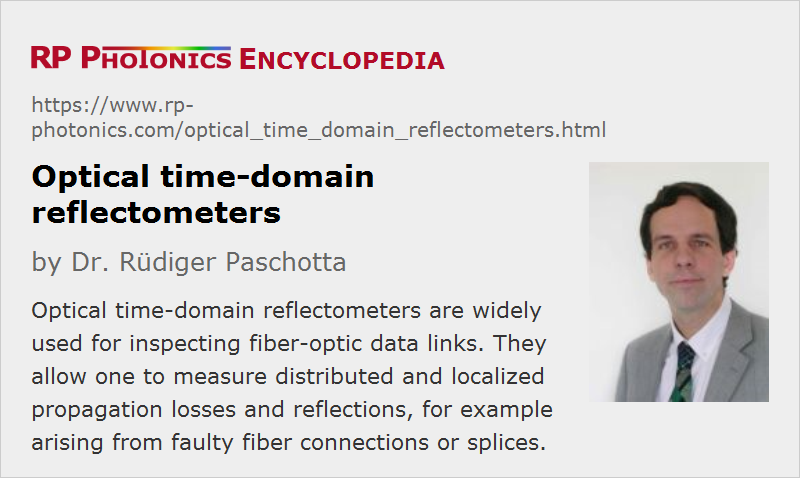

Optical Time-domain Reflectometers
Acronym: OTDR
Definition: instruments for measuring the spatially resolved reflectivities and losses in optical fibers
More general term: optical metrology instruments
German: optische Rückstreumessgeräte
Categories: fiber optics and waveguides, lightwave communications, optical metrology, methods
How to cite the article; suggest additional literature
Author: Dr. Rüdiger Paschotta
Optical time domain reflectometers are instruments which measure the spatially resolved reflectivities and losses in optical fibers. They are mostly used in the technology of optical fiber communications for testing fiber-optic links (e.g. in cable TV, LAN, metropolitan networks or long-haul Internet backbones) in terms of distributed propagation losses, localized losses e.g. due to optical components or poor fiber splices. The measurement method, which is explained in the following section, is called optical time-domain reflectometry. The acronym OTDR is used for both the instruments and the method.
Note that a network function can also be tested at a higher level, for example with a bit error rate tester (BERT). However, problems found on that level are not necessarily easy to track down; OTDR can be used to analyze networks on a basic physical level, and they also often greatly help in localizing problems.
Operation Principle of OTDR
The operation principle of optical time-domain reflectometry is easy to understand. The instrument emits short laser pulses, e.g. with pulse durations of e.g. some tens of nanoseconds and a peak power of a few hundred milliwatts, as can be obtained with a single-mode laser diode. These pulses are injected through a launch cable into the tested optical fiber – or frequently into a fiber-optic link which may contain additional components such as fiber splices and fiber connectors, optical filters, fiber amplifiers, Faraday isolators, optical power monitors and photodetectors of telecom receivers. Any reflected light is extracted with a directional fiber coupler and sent to a fast and sensitive photodetector. That allows for a time-resolved measurement of the reflected optical power and thus of the return loss.
It is of crucial importance that one does not only have localized reflections, e.g. from tiny air gaps in mechanical splices or at connectors, but also distributed reflections due to Rayleigh scattering in the fiber, which is caused by microscopic fluctuations in the fiber; those are to some extent unavoidable due to the amorphous structure of the glass. A tiny portion of the scattered light is guided by the fiber in backward direction and can therefore be detected at the input end.
In the simplest case, where one has a long homogeneous fiber without any defects, one will have a reflected power which continuously decreases over time, since contributions measured at later times arise from more distant points in the fiber, and those are weaker due to the propagation losses in both directions. Figure 1 shows a simulated example for a 10 km long fiber with propagation losses of 1 dB/m at the test wavelength:
Simulation, the signal abruptly ends where the fiber ends; they are, in reality one may often have a peaked you to the Fresnel reflection.
An OTDR instrument would typically display such a curve, but with a different scaling. Instead of the time axis, it uses a spatial axis, simply converting the arrival times into positions, using the known value of the group velocity of light in the fiber.
From the slope of the obtained curve, one can easily derive the coefficient of propagation loss in the fiber.
If a fiber contains a mechanical splice, for example, where some amount of additional loss occurs, the obtained OTDR trace will exhibit a step, as shown in Figure 2:
Note that the magnitude of the step is twice that of the splice loss, since light scattered from locations behind the splice will experience that last twice – on the forward and backward pass.
In some cases, when also obtains additional reflections. For example, if a mechanical splice has a significant air gap, one may obtain substantial Fresnel reflections. Precisely speaking, they are such Fresnel reflections at both air–glass interfaces, which cancel each other by destructive interference if the width of the air gap is negligible, but no more if the gap gets larger. In an OTDR trace, such a reflection will show up as a peak.
It is thus clear what kind of measurements can be done with an optical time-domain reflectometer:
- One can measure the propagation losses in the fiber at the test wavelength. One can also check whether the loss coefficient is constant along the fiber, or changes locally for example due to bend losses or due to the concatenation of different fibers.
- One can locate and quantify additional localized losses e.g. due to faulty splices or fiber connectors of fiber patch cables. Also, If a fiber is broken it may still transmit some light, but with a substantial transmission loss. Further, one can measure the characteristics of fiber couplers and the insertion loss of components such as Faraday isolators. Fiber amplifiers, even in the unpumped state, are usually also seen because of the reabsorption in the common quasi-three-level gain media.
- If a fiber-optic link is damaged, for example by construction works, one may also quickly locate the problem.
For those results to be relevant, one will usually choose the wavelength of the test pulses to be in the range which is also used for the signal transmission. For telecom systems, the wavelength can be in different ranges, e.g. around 850 nm, 1.3 μm or 1.55 μm. However, one may achieve a better measurement sensitivity by choosing a substantially shorter wavelength, where Rayleigh backscattering is correspondingly stronger. In some cases, this can be useful e.g. for precisely locating some fiber faults. A possibility is to perform OTDR measurements somewhat outside the wavelength range of telecom signals in order to facilitate measurements during signal transmission. Note that the test wavelength should then also be outside the wavelength region where there is gain from any fiber amplifiers, since that could obviously affect the measurements.
In some cases, one has to take into account that multiple reflections can occur – for example, if a fiber contains two different points with substantial reflectivity. The OTDR trace is then more difficult to interpret, since one loses the simple mapping between time and space.
OTDR measurements are particularly helpful for identifying problems. For example, if the bit error rate of a fiber-optic link is too high, that can have many causes. It may then be rather tedious to subsequently check all connectors, and checking splices is particularly cumbersome. A single OTDR trace may immediately reveal the problem, even if it is kilometers away from the instrument.
Required Detection Sensitivity, Dynamic Range and Bandwidth
In our example case with a single-mode fiber, the reflected signal starts at a level of ≈-60 dB, indicating that only about one millionth of the injected pulse energy is returned from the initial section of the fiber (the length of which is determined by the pulse duration). This shows that the used photodetector needs to have a high sensitivity.
Furthermore, the detector of a reflectometer needs to have a large dynamic range, i.e., it must be able to detect signals in a wide range of power levels. The achieved dynamic range essentially limits the maximum possible range of measurement distances. Typical dynamic range values in the telecom area are around 35 to 50 dB.
The detector must also have a high bandwidth, because that limits the possible spatial resolution. In order to resolve reflections from two discrete points in a distance of 10 cm, for example, one needs to resolve signals with a temporal distance of ≈2 · 10 cm / 2 · 108 m/s = 1 ns. The used pulse duration should then obviously also be shorter than that. In practice, however, one often uses substantially longer pulses with duration of tens or even hundreds of nanoseconds in order to limit the acquisition time.
Note that an increased temporal resolution has two negative effects:
- One needs to use shorter test pulses, which therefore carry less optical energy (assuming a constant peak power).
- The detector noise will usually be higher due to the higher required detection bandwidth.
Therefore, a high temporal resolution is difficult to obtain – particularly for long fibers, where quite weak signals need to be detected.
Substantially stronger signals can be obtained from multimode fibers – both because of a higher capturing rate for backscattered light and because of the typically higher numerical aperture, which favors scattering. The propagation losses of such fibers are usually substantially higher, but one also typically uses shorter lengths of them. Overall, the OTDR method is then often substantially easier to implement. However, it is also required for single-mode long-distance fiber-optic links.
The required combination of sensitivity and temporal resolution is usually not achievable with a single pulse, but within one test one can average the results of measurements with many pulses, having a sufficiently low pulse repetition rate (below the inverse round-trip time for the whole fiber length). The longer the spatial measurement range, the higher will be the required sensitivity, and the lower the maximum allowed pulse repetition rate. Therefore, the required total measurement time will increase substantially for increased spatial ranges. In some cases, acquisition times of many minutes are required. One may sometimes sacrifice spatial resolution (by using longer and thus more energetic test pulses) in order to shorten the acquisition time. Clearly, the optimum trade-off concerning measurement range, spatial resolution and acquisition time depends on the circumstances.
One may in principle use a photomultiplier tube for the pulse detection, since photomultipliers offer the combination of high sensitivity and high bandwidth. However, the photocathode needs to be sensitive for the relevant wavelengths, and the achievable quantum efficiency in the 1.5-μm telecom wavelength region is quite poor. Also, photomultipliers are comparatively bulky and need a very high operation voltage. For such reasons, one would typically prefer to use an avalanche photodiode.
Typically, the time-dependent detector output will be connected to an analog-to-digital converter (e.g. part of a sampling card) within the reflectometer, which digitizes the values with a certain sampling rate according to the required spatial resolution. A microprocessor can then be used to do the required number of acquisitions and provide an averaged OTDR trace. Additional data processing can be applied with suitable software.
Also apply masking techniques for improving the signal quality. For example, one may deactivate the photodetector at times where a strong signal is expected in order to more accurately measure what comes behind it.
The Dead Zone Problem
Isolated reflecting points in a fiber system may produce strong spikes in the detector signals, going far above the level of the background from Rayleigh scattering. This often causes some dead time of the detection system directly after such an event: the detector then requires some time to get back to its full sensitivity. In the spatial domain, that dead time relates to a dead zone.
Dead zones are quantified by instrument manufacturers. The quoted values can substantially depend on the made assumptions. For example, one may test the minimum distance between two isolated reflection points of the same strength which allows the separate detection of those; that leads to an event dead zone. However, note that it is substantially more challenging to detect a low backscattered power due to Rayleigh scattering after a single isolated reflection, because the detector must get back to the its full sensitivity. Therefore, a dead zone in that respect (an attenuation dead zone) can be significantly longer for the same instrument.
Of course, the magnitude of dead zones can depend on instrument settings, e.g. on the used pulse duration.
Types of OTDR Instruments
While optical time-domain reflectometers are all based on the same operation principle, there are different variants of reflectometers, optimized for different application areas:
- There are high-performance laboratory instruments, offering the longest measurement ranges, high spatial resolution and substantial flexibility for a wide range of test conditions. Having reasonably large color displays and convenient controls, they are also nicest to use. They can contain many useful features for data analysis, as explained further below. Unfortunately, such flexible high-performance equipment has its price.
- For use in the field, there are hand-held reflectometers, which are relatively lightweight and battery-powered. However, they may have a lower performance, and the smaller display screen (e.g. 5 inches diagonal, possibly a touch screen) may make their use somewhat less convenient. There can also be more limited memory space for storing OTDR traces. SD memory cards are common in this area.
- There are remote OTDR devices, which can be permanently installed into fiber-optic links and deliver the data e.g. through ethernet connections to a central location for monitoring a larger system. They can be regularly operated to monitor the state of the system, or on demand in case of transmission problems.
There are also mixed solutions. For example, a laboratory or hand-held instrument may also have features for remote use, which can be highly useful in certain situations.
A simple entry-level OTDR instrument may just display the recorded OTDR traces or variable sections of them. More advanced devices offer additional operations. Some examples:
- The device may calculate the spatially resolved loss efficient of the fiber from the slope of the OTDR trace.
- It may calculate localized losses and reflections, and numerically indicate them in the graph.
- By comparing traces taken for two different wavelengths, it may identify bent sections, because the bend losses (in contrast to other typical losses) usually rise substantially with increasing wavelength.
- One may enter certain specifications, e.g. limits to the distributed and localized propagation loss, and suitable software may check whether all those specifications are fulfilled, and point out any violations. For example, a single poor-quality splice may be identified, even if the overall link loss is tolerable.
- Artifacts from multiple reflections may be removed.
- A handheld device may have a WiFi or Bluetooth connection to a personal computer, e.g. for transferring traces of for remote control.
- Software may also produce a overall performance rating of a link for a quick assessment of its quality.
- A device may offer testing with different optical wavelengths; that can be essential for testing wavelength division multiplexing (WDM) systems.
Obviously, the selection of such an instrument should be done by a person having substantial experience in the field, understanding the performance requirements and which kinds of instrument features will be particularly useful for the purpose. Note that the required performance can differ substantially between different fields of applications, for example concerning the types of telecom systems: fiber to the home, cable TV, local area optical networks, metropolitan networks or long-haul Internet backbones.
Some devices are mostly used for locating faults, and may then be of a simpler type, which for example only displays fault locations instead of full OTDR traces.
OTDR Data Formats
There are a few different standouts for OTDR data formats, which facilitate the combination of devices from different suppliers. For example, remote OTDR instruments may deliver such standardized OTDR traces, which can then be processed with software from other suppliers. An OTDR file will typically contain a long chain of integer values, e.g. logarithmic values in units of 1/1000 dB, and in addition a header indicating some parameters such as the range and resolution. Specialized post-processing software is available which allows one to analyze OTDR traces on a personal computer, for example.
Bidirectional Testing
In some cases, it is necessary to test fiber-optic links in both directions. For example, one may apply the same OTDR instrument once for each side of the link. That can lead to different results particularly in multimode systems, where coupling losses are not necessarily the same in both directions. Of course, systems containing Faraday isolators can be tested in only one direction, unless the isolation is quite poor.
Sometimes, it makes sense to test two fibers at the same time from one end, connecting the fibers at the other end. Although one may still require technicians at both ends, one can avoid the transport of the OTDR instrument (or using two of them).
Alternative Methods
Spatially resolved measurements of Rayleigh backscattering and additional reflections can also be achieved with other methods. In particular, one may use optical coherence tomography, which can then also be called low-coherence reflectometry. That technique is particularly suitable for measurements of a very short lengths with very high spatial resolution, even far better than 1 mm. For example, it can be used to investigate photonic integrated circuits, which are too small for the application of OTDR. The use light source will then typically be a superluminescent diode.
Suppliers
The RP Photonics Buyer's Guide contains 17 suppliers for optical time-domain reflectometers.
Questions and Comments from Users
Here you can submit questions and comments. As far as they get accepted by the author, they will appear above this paragraph together with the author’s answer. The author will decide on acceptance based on certain criteria. Essentially, the issue must be of sufficiently broad interest.
Please do not enter personal data here; we would otherwise delete it soon. (See also our privacy declaration.) If you wish to receive personal feedback or consultancy from the author, please contact him e.g. via e-mail.
By submitting the information, you give your consent to the potential publication of your inputs on our website according to our rules. (If you later retract your consent, we will delete those inputs.) As your inputs are first reviewed by the author, they may be published with some delay.
Bibliography
| [1] | M. K. Barnoski and S. M. Jensen, “Fiber waveguides: A novel technique for investigating attenuation characteristics”, Appl. Opt. 15 (9), 2112 (1976), doi:10.1364/AO.15.002112 |
| [2] | S. D. Personick, “Photon probe – an optical time-domain reflectometer”, Bell Syst. Tech. J. 56, 355 (1977) |
| [3] | B. Costa et al., “Splice loss evaluation by means of the backscattering technique”, Electron.Lett. 15, 550 (1979), doi:10.1049/el:19790395 |
| [4] | M. Nakazawa, “Rayleigh backscattering theory for single-mode optical fibers”, J. Opt. Soc. Am. 73 (9), 1175 (1983), doi:10.1364/JOSA.73.001175 |
| [5] | B. L. Danielson, “ Optical time-domain reflectometer specifications and performance testing”, Appl. Opt. 24 (15), 2313 (1985), doi:10.1364/AO.24.002313 |
See also: reflectivity, optical fiber communications, Rayleigh scattering, insertion loss, return loss, mechanical fiber splices, fusion splicing of fibers, optical metrology
and other articles in the categories fiber optics and waveguides, lightwave communications, optical metrology, methods
|  |
If you like this page, please share the link with your friends and colleagues, e.g. via social media:
These sharing buttons are implemented in a privacy-friendly way!